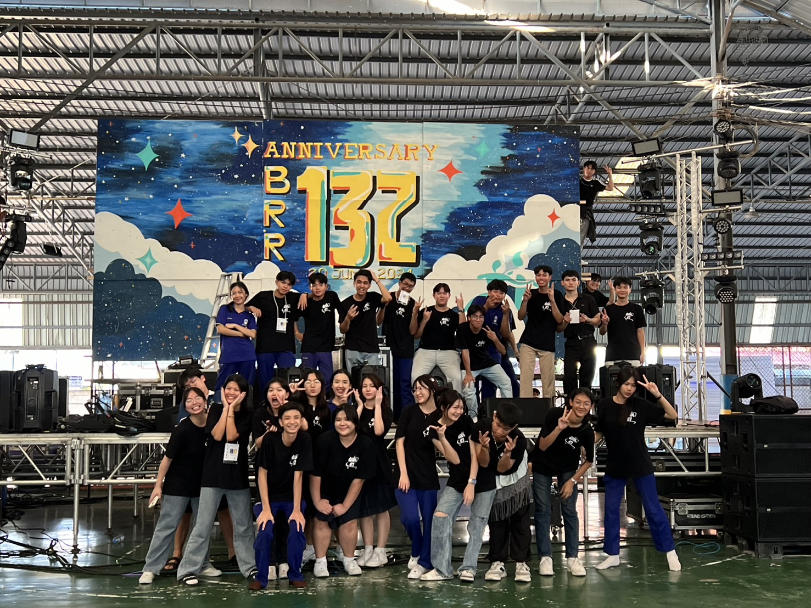
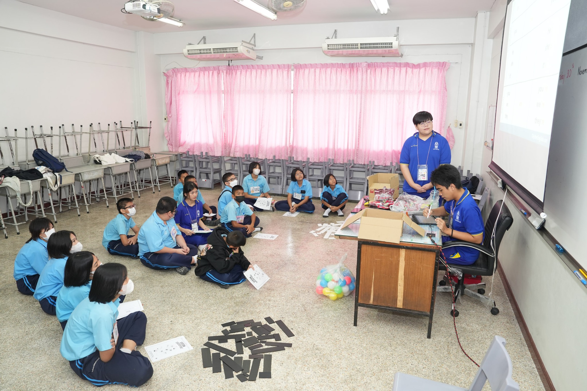

Activities

Student Council
I had the chance to be part of the student council, where
I learned how to handle different opinions and promote unity
within the group. I also organized activities that
strengthened friendships among students and created a
positive school environment. This experience made me
proud and motivated me to keep improving myself. I hope to
use what I learned in my daily life and future.

Volunteer Activities
During my time in the student council, I took part
in various volunteer activities. This experience
helped me learn new skills that I can apply to
my personal growth. For instance, I assisted with
the BRR Fun Run at school and underwent
training as a member of the student council.

IEP Activities
Participating in group projects and community service has
taught me how to think critically and come up with
innovative solutions to challenges. I’ve also learned the
value of teamwork and collaboration, which are essential for
both personal and academic growth. Overall, this program
has been instrumental in my journey to improve myself while
making a positive impact on those around me.